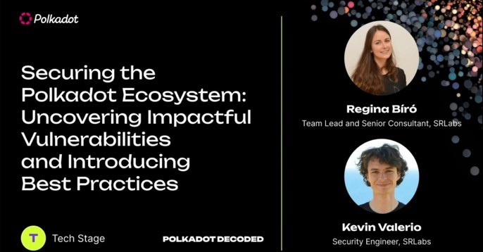
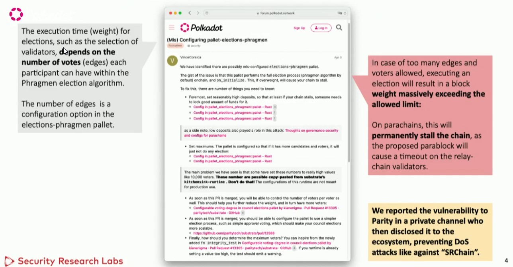
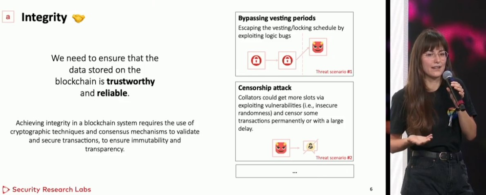
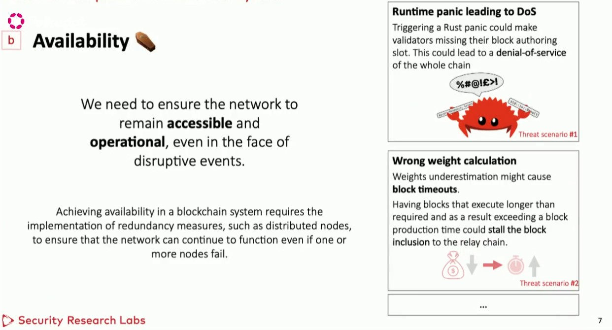
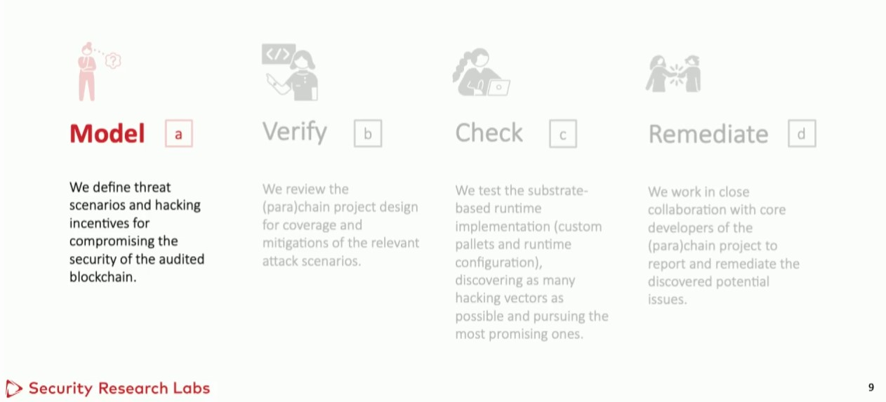
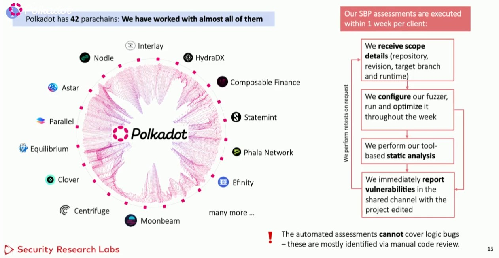
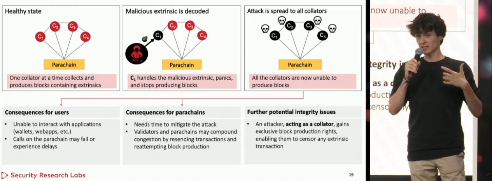
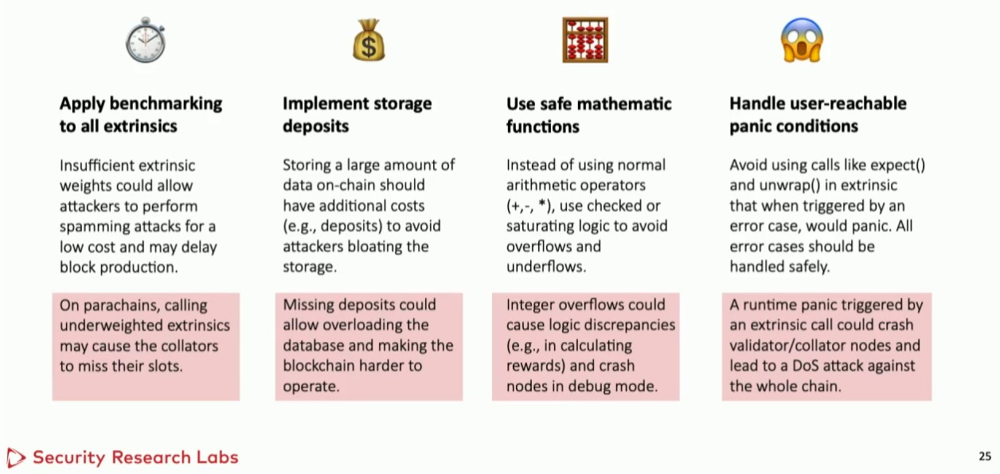
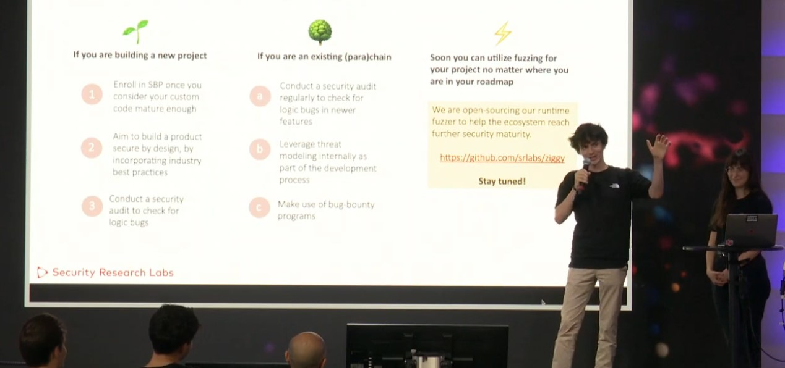

Hey there, folks! I just attended an awesome presentation by Regina Vito and Kevin Valerio from Sr Labs. They delved into the exciting world of securing the Polkadot ecosystem and covered some impactful vulnerabilities along with introducing best practices. Let's dive into it!
Regina and Kevin, kicked off the presentation with a rather alarming example of what could happen if security is neglected or if a palette isn't configured securely. They painted a vivid picture of a hypothetical project called Sr Chain experiencing downtime, causing panic among the team and leading to a drop in token prices. Yikes! None of us would want to be in that situation, right?
The specific issue they highlighted was a misconfiguration problem with the elections palette. You see, the elections palette aims to implement a form of democracy, where more participation translates to a more democratic system. However, when you have limited resources and execution time, allowing voters to vote for multiple candidates can cause a massive computation overload. This overload can lead to timeouts and make validators or collectors miss their slots. Fortunately, Sr Labs discovered this bug a few months ago and responsibly disclosed it to the project team, who then shared the fix with the wider ecosystem.

But that wasn't the only bug they found! Regina and Kevin emphasized that they've come across numerous vulnerabilities in their work, and they've been actively helping teams mitigate and fix them. They promised to share more examples, so let's dive into that.
The presentation took us through various aspects of securing a blockchain project, starting with ensuring integrity. Users need to trust that their actions and transactions will be executed as intended. Regina explained that threats to integrity could include vesting period manipulations, where malicious token holders find a way to spend tokens before the intended time, thus undermining the system's integrity. They also discussed censorship attacks, where trusted validators or collators manipulate or censor transactions, and front-running attacks, which no one wants to encounter.

Next, they covered the importance of availability. A blockchain project should strive to provide uninterrupted service to its users, allowing them to carry out their operations seamlessly. They highlighted issues like incorrect weight calculations and runtime panics that can disrupt the availability of the blockchain, resulting in frustrated users and a poor user experience.

To address these challenges, Sr Labs follows a comprehensive methodology. They start with threat modeling, putting themselves in the shoes of potential hackers to understand their motives and identify potential vulnerabilities. Then comes the design verification phase, where they dive into the project's documentation to assess if the team has already considered and mitigated threats. The next step is the hacking phase, where they perform manual code analysis, along with dynamic and static analysis using fuzzing and other tools. Lastly, they support the remediation process, helping teams fix the bugs they discovered and ensuring new issues don't arise in the process.

It's worth noting that Sr Labs doesn't limit their impact to individual assessments. They actively participate in the substrate Builders program, providing security assessments for power chains being onboarded to Polkadot. They've worked with several live projects and have found various bugs, as showcased in their presentation.

Kevin took the stage to delve into the technical aspects of impactful bugs. He focused on the availability of the Polkadot ecosystem and how collectors, which facilitate communication among chains, can be vulnerable to malicious attacks. Crafted malicious exchanges sent to collectors can trigger panics, causing crashes and disruptions across the system. Clearly, these bugs have severe consequences for users, parachains, and developers alike. It's crucial to address them promptly to maintain a smooth and uninterrupted experience.

As the presentation came to a close, Regina and Kevin shared some best practices they've learned through their extensive experience. They emphasized the importance of performing benchmarking, as it has been a common issue they've observed during their assessments. They encouraged blockchain projects to prioritize benchmarking to ensure optimal performance and security. They also highlighted arithmetic issues and the emerging trend of reachable panic issues, cautioning against following that particular trend.

In summary, Regina and Kevin's presentation was an eye-opening journey into securing the Polkadot ecosystem. They showcased their expertise in identifying vulnerabilities, their comprehensive methodology, and their commitment to helping teams mitigate and fix issues.
Attending this presentation was a valuable learning experience for me. It reiterated the critical role security plays in the blockchain world, the importance of proactive measures to protect users and maintain a robust ecosystem, and helped me answer fundamental questions regarding security in blockchain. Im grateful to Regina, Kevin, and Sr Labs for sharing their knowledge and insights.

Also check their open-source runtime fuzzer to help the ecosystem reach further security maturity: https://github.com/srlabs/ziggy
Ah and here is the NFT i earned for attenting Polkadot Decoded 2023 Event:NFT